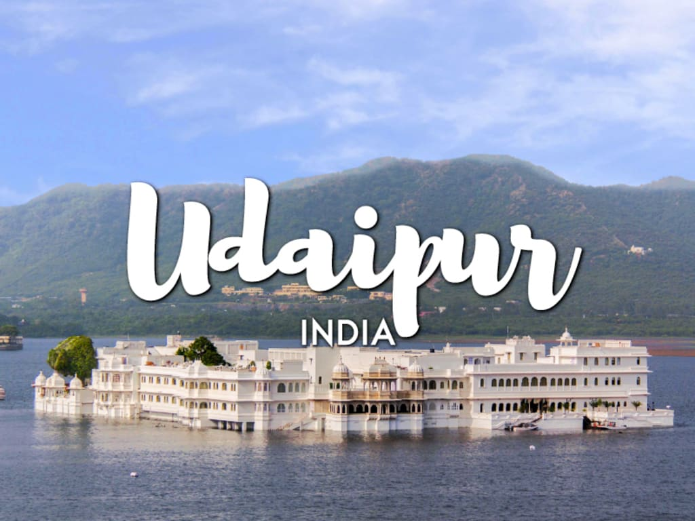

Exploring UDAIPUR
Udaipur is a city of rich cultural heritage.It is the city of lakes which was established by Raja Udai Singh the 2nd.
Udaipur is a city of rich cultural heritage.It is the city of lakes which was established by Raja Udai Singh the 2nd.

Kerala is among the top 50 must-visit destinations on the Earth. This is due to beaches, backwaters, lakes, mountain ranges, waterfalls, ancient ports, palaces, religious institutions, and wildlife sanctuaries which are major attractions for both domestic and international tourists
| DAYS | PLACES TO VISIT | RESTAURANTS NEAR BY |
| Munnar 1 & 2 | Tea gardens | KTDC Restaurant |
| Kalari Kshetra | Prakrithi Restaurant | |
| Eravikulam National Park | The Tea Valley | |
| Attukal Waterfalls | Samrudhi Restaurant | |
| Mattupetty Dam | Hornbill Restaurant | |
| LockHeart gap | Tea Room | |
| Allepy3 | Boat House | Food is served in the boat house |